5
Low Power Arduino
It is fair to say that, without taking any special measures, an Arduino really does not use a lot of power. Typically, an Arduino Uno draws about 40 mA, which when powered from USB at 5V amounts to just 200 mW. That means it can happily run on a small 9V battery (150 mAh) for perhaps four hours.
Current consumption becomes important when the Arduino is being run for long periods of time using batteries, such as in remote monitoring or control situations in which batteries or solar are the only option. For instance, I recently made an Arduino-based automatic hen-house door, using a small solar panel to charge the battery so it had enough juice to open and close the door twice a day.

Power Consumption of Arduino Boards
Let’s establish some initial figures for the power consumption of a few of the more popular Arduino boards. Table 5-1 shows the results of directly measuring the current consumption of the boards with an ammeter. Note that measuring this is a little tricky as the current varies as timers and other parts of the microcontroller and Arduino board perform periodic tasks.
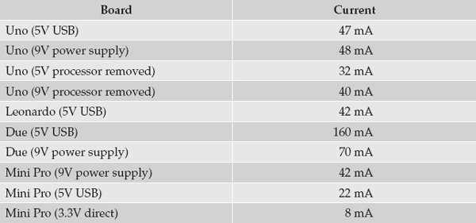
Table 5-1 Power Consumption for Arduino Boards
One interesting thing is that if you look at the difference between an Arduino operating at 5V with and without the processor chip, the difference is just 15 mA, implying that the board itself is using the other 32 mA. The Arduino board does, of course, have the USB interface chip, an “On” LED, and 3.3V voltage regulators, all of which use some power even without the microcontroller. Note also how much less current the microcontroller draws at 3.3V.
The techniques described here can reduce the power required by the processor but not that required by the board itself. In the examples that follow, I use the Arduino Mini Pro board supplied directly with 3.3V through its VCC and GND connections (Figure 5-1), bypassing the voltage regulator, so that apart from the “On” LED, I am only powering the microcontroller chip.
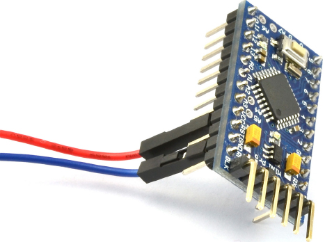
Figure 5-1 An Arduino Mini Pro, powered directly from 3V
This setup is one you would be likely to use in a battery-operated system, as a single lithium polymer (LiPo) battery cell provides 2.7V when almost empty and 4.2V when full, a range that is just fine for a naked ATmega328 microcontroller.
Current and Batteries
This book is about software, so I will not dwell on batteries any longer than is necessary. Figure 5-2 shows a selection of batteries that you might consider for powering an Arduino.
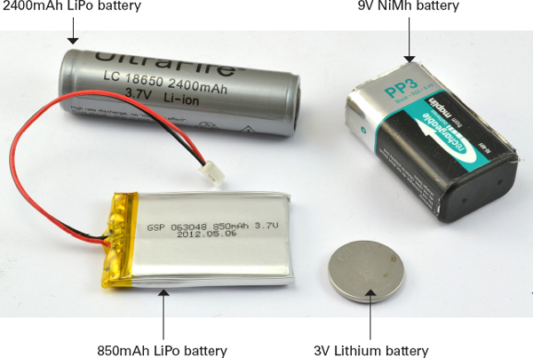
Figure 5-2 Batteries for powering Arduino boards
At the top-left is a 2400mAh LiPo cylindrical LiPo battery. Below is a small, flat 850mAh LiPo battery. LiPo batteries are lightweight and can be recharged many times and hold a lot of energy for their size and weight. At the top-right is a 9V NiMh battery, with a capacity of 200 mAh. This battery is also rechargeable but uses an older technology. Because it is a 9V battery, it would be suitable for powering an Arduino only when using the Arduino’s voltage regulator. You can buy battery clip adapters that allow you to connect the battery to the barrel jack on an Arduino. Finally, at the bottom-right is a 3V nonrechargeable Lithium battery (CR2025) that has a capacity of about 160 mAH.
As a rule of thumb, you can calculate the number of hours that a battery will last before it is discharged by dividing the capacity in milliamp hour (mAh) by the number of milliamps (mA) being drawn:
Battery life in hours = Battery capacity in mAh / Current in mA
For example, if we were to use the CR2025 to power a Mini Pro at 3V, we could expect it to last 160mAh/8mA = 20 hours. If we powered the same hardware from the 2400 mA LiPo cell, we could expect it to last 2400/8 = 300 hours.
Reducing the Clock Speed
Most of the Arduino family has a clock frequency of 16 MHz. The microcontroller only really uses significant amounts of current when its binary logic is switching from a HIGH to a LOW, so the frequency at which the chip operates has a big effect on the current consumed. Lowering the frequency will, of course, make the microcontroller perform more slowly, which may or may not be a problem.
You can lower the frequency at which an ATmega328 chip operates from within your sketch. A convenient way to do this is to use the Arduino Prescaler library (http://playground.arduino.cc/Code/Prescaler).
As well as allowing you to set the microcontroller’s frequency of operation, the Prescaler library also provides replacement functions for millis and delay called trueMillis and trueDelay. These replacements are necessary because reducing the clock frequency will increase the length of a delay by the same proportion.
The following example sketch turns the “L” LED on for 1 second and then off for 5 seconds, during which the current is measured for each of the possible Prescaler values that set the frequency.
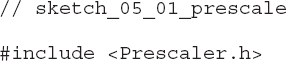
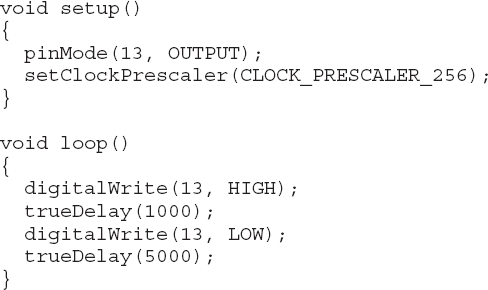
The library provides a number of constants so you can set the amount by which the clock frequency is divided. Therefore, the value CLOCK_PRESCALER_1 leaves the clock frequency unchanged at 16 MHz and, at the other extreme, using the constant CLOCK_PRESCALER_256 will divide the clock frequency by 256, giving a clock frequency of just 62.5 kHz.
Table 5-2 show the current consumption at each of the possible clock frequencies, and Figure 5-3 shows these data on a chart. The chart shows that the curve starts to level off fairly steeply, so 1 MHz looks like a good compromise of clock frequency verses power consumption.
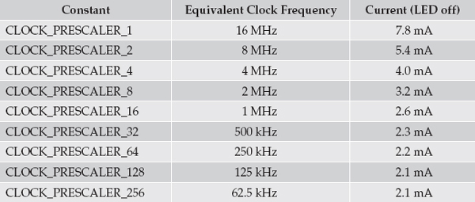
Table 5-2 Current Consumption vs. Clock Speed
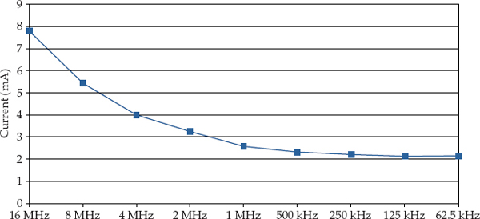
Figure 5-3 A chart of current consumption vs. clock speed
As well as having to use new versions of millis and delay, there are other consequences of stopping the clock speed. In fact, any task in which timing is critical, such as PWM output and Servo control, is not going to work as expected.
Most of that 2.1 mA, used at the slowest clock speed, is likely to be consumed by the “On” LED, so if you really want to be economical, you could carefully de-solder it.
Turning Things Off
The ATmega chips have very sophisticated power management, to the extent that you can actually turn off features that you are not using to save a small amount of current.
What is more, you can turn things on and off in your sketch. So you could, for example, just turn on the analog-to-digital converter (ADC) when you need to do an analogRead and then turn it off again afterward.
The power is controlled using a library avr/power.h that includes functions in disable/enable pairs. So the function power_adc_disable turns the ADC off and power_adc_enable turns it back on again.
The power savings to be had are not great, however. In my testing, turning everything off on a Mini Pro at 5V and 16 MHz saved a total of just 1.5 mA, reducing the current from 16.4 mA with everything on, to 14.9 with everything off. I used the following test sketch:
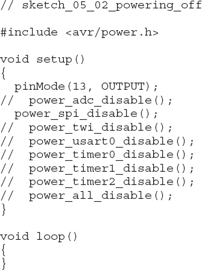
The functions available are listed in Table 5-3. Each function also has a counterpart, ending in enable rather than disable.
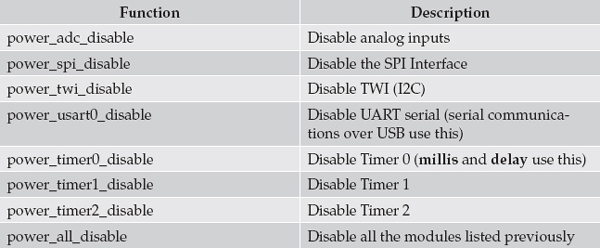
Table 5-3 Power Management Functions for ATmega Arduinos
Sleeping
The ultimate way to save power on your Arduino is to put it to sleep when it doesn’t have anything useful to do.
Narcoleptic
Peter Knight has produced an easy-to-use library called Narcoleptic, which you can download from here: https://code.google.com/p/narcoleptic/.
Obviously, putting an Arduino to sleep is of no use if you can’t wake it up again! There are two methods to wake up an Arduino. One is to use an external interrupt and the other is to set a timer to wake the Arduino after a period of time. The Narcoleptic library just uses the timer method.
The Narcoleptic library takes the approach of providing you with an alternative delay function that puts the Arduino to sleep for the time specified in the delay. Because nothing happens when the Arduino is doing a delay anyway, this method works brilliantly.
For example, let’s look at our old favorite sketch, Blink. The following sketch turns an LED on for 1 second and then turns it off for 10 seconds and repeats indefinitely:
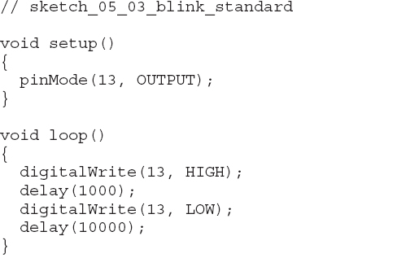
The Narcoleptic version of this sketch is shown here:
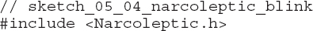
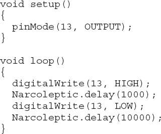
The only difference is that you import the Narcoleptic library and use its delay rather than the regular delay.
Running both sketches on a Mini Pro at 5V and 16 MHz, the first sketch uses around 17.2 mA when the LED is in the off part of the cycle. On the other hand, the Narcoleptic version of the sketch reduces this to a tiny 3.2 mA. The “On” LED uses most of that (about 3 mA), so if you remove it, then your average power consumption could be reduced to well under 1 mA.
The microcontroller can go to sleep pretty quickly, so if your project relies on a button being pressed to trigger some action, you do not necessarily need to use an external interrupt to wake it from sleep. But you could (probably more easily) write your code so the Arduino wakes 10 times a second, checks to see if an input is HIGH, and then, if it is, does something rather than go back to sleep. The following sketch illustrates this process:
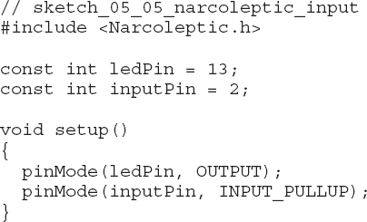
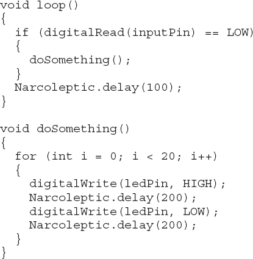
When running this sketch, a Mini Pro at 5V and 16 MHz uses a miserly 3.25 mA while the Arduino waits for something to happen. When pin2 is connected to ground, the LED is flashed 20 times, but because you are using the Narcoleptic delay in the LED flashing too, the current only rises to an average of 4 or 5 mA.
If you change the delay inside the loop, to try and make the Arduino wake, say, 100 times per second, the power will rise again because it does take a little while for the Arduino to go to sleep. A delay of 50 (20 times a second), however, would work just fine.
Waking on External Interrupts
The approach just described works for most situations; however, if you need to respond more quickly to an external event, then you need to arrange for the microcontroller to wake up when an external interrupt occurs.
To rework the previous example to use pin D2 as an external interrupt pin is a lot more work, but it achieves slightly better results, as it does not require polling the interrupt pin. The code for this is quite complex, so first I’ll show you the code and then describe how it all works. If you skipped Chapter 3 on interrupts, then you should probably read it before tackling this example.
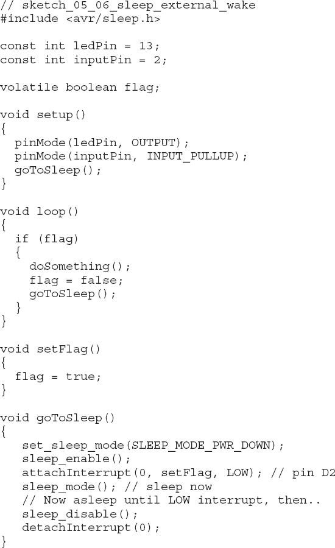
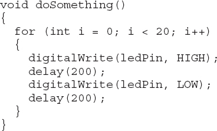
The first thing to note is that the example uses some functions that are defined in the library avr/sleep.h. Just like avr/power.h that I used earlier, this library is not part of the Arduino core, but rather a library for the AVR family of microcontrollers. This means it will not work on the Arduino Due, but then again, if you are making a low-power Arduino project, the Due should be just about your last choice of board.
After defining the pins I am going to use, I then define a volatile variable to allow the ISR to communicate with the rest of the sketch.
The setup function sets up the pins and then calls the function goToSleep. This function sets the type of sleep mode, which, in this case, is SLEEP_MODE_PWR_DOWN. This mode saves the most power, so it makes sense to use it.
It is then necessary to call sleep_enable. Calling this does not actually put the microcontroller to sleep. Before I do that, I need to attach an interrupt to interrupt 0 (pin D2) so the Arduino can be woken when the time comes.
NOTE Notice that the interrupt type is set to LOW. This is the only interrupt type that you can use with this sleep example. RISING, FALLING, and CHANGE will not work.
Having attached the interrupt, calling sleep_mode() actually puts the process to sleep. When the microcontroller eventually wakes, the ISR is run and then the sketch continues from the next line in goToSleep. This first calls disable_sleep and then detaches the interrupt, so the ISR cannot be invoked again until the sketch has put itself back to sleep.
When an interrupt occurs on D2, the ISR (setFlag) simply sets a flag that the loop function checks. Remember that using delays and so on, in an ISR are a no-no. The loop function must, therefore, monitor the flag until it becomes set and then call the same doSomething function that was used in the Narcoleptic example. Having performed the action, the flag is reset and the Arduino put back to sleep.
The power consumption level was pretty much the same as in the Narcoleptic example, except that while flashing the LEDs, the current consumption was higher as the normal delay function was used.
Use Digital Outputs to Control Power
Although this chapter is really about using software to minimize power consumption, it would not be out of place to mention a useful hardware tip to keep the power consumption low.
Figure 5-4 shows a light sensor using a photoresistor (resistance changes with light) and a fixed resistor connected to an Arduino analog input that is measuring the light intensity.
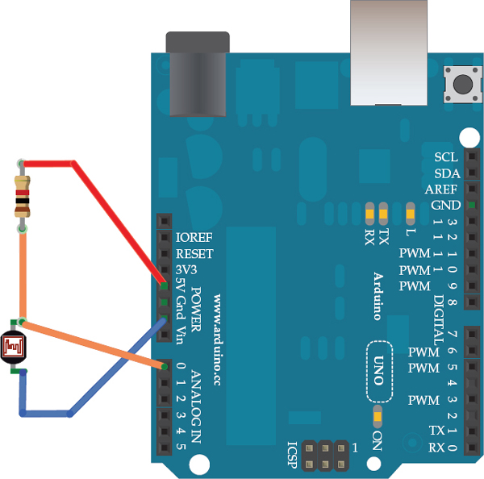
Figure 5-4 Measuring light with an LDR (Photoresistor)
The problem with this approach is that there is a constant current flowing from 5V through the photoresistor and then through the fixed resistor. If the photoresistor has a “bright” resistance of 500Ω, then, using Ohm’s Law, the current flowing is I = V/R = 5V / (1000Ω + 500Ω) = 3.3 mA.
Instead of using the fixed 5V supply of the Arduino, you could use a digital output (see Figure 5-5) to turn the pin HIGH, take a reading, and then turn it LOW again. In this way, the 3.3 mA only flows for a tiny amount of time every time a reading is taken, reducing the average current consumption enormously.
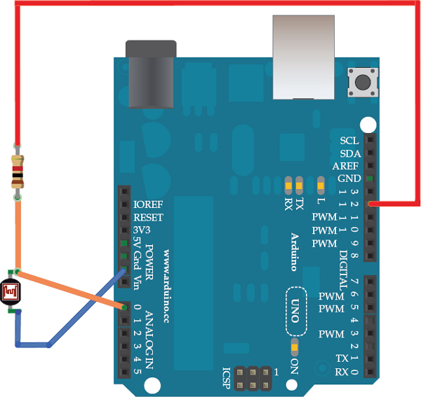
Figure 5-5 Measuring light economically
The following sketch illustrates this approach:
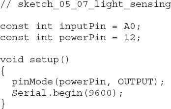
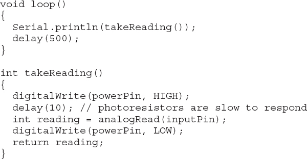
You can use this technique for a lot more than just light sensing. You could, for example, use the digital output to use a MOSFET transistor to turn high-power parts of your project on and off as required.
Summary
The best ways to minimize current consumption are to:
• Put the microcontroller to sleep when it’s not doing anything
• Run the Arduino at a lower voltage
• Run the Arduino at a lower clock frequency